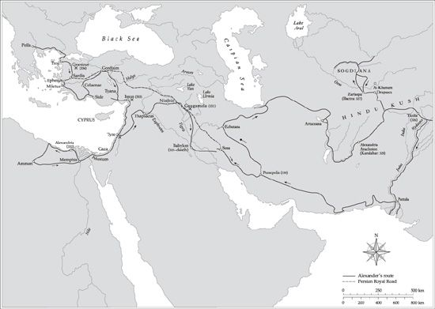
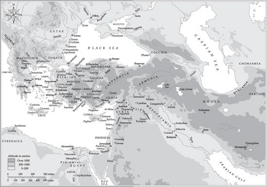

bird-cage of the Muses…
(Timon of Phlius, 3rd cent. BCE)
Philip’s son and successor Alexander III, later known as ‘the Great’, came to the throne of Macedon in highly dubious circumstances; indeed, a shadow of suspicion hangs over him to this day (Plate 16). But his complicity in his father’s assassination in 336 at Aegae, Macedon’s ceremonial capital and royal burial-ground, can never be proved, and there is at least as much reason to suspect the hand behind the scenes of his dynamic mother, Olympias. She had recently been downgraded as Number 1 Queen (Philip, like the Sicilian tyrants, broke the universal Greek rule of strict monogamy, as Alexander was also to do), and Philip’s latest (seventh) Queen was a high-born Macedonian with vital political connections who had recently given birth to a son. Philip himself was a pretty hale 46 years of age. There was a severe danger that Alexander would be passed over for the succession. Hence, arguably, the assassination—carried out in full view as Philip was celebrating the wedding of his daughter with Olympias to Olympias’s own brother.
But that is only a plausible scenario. Whoever was behind the murder, there is no doubt but that it was Alexander who profited most from it. Winning the support, crucially, of the army, Alexander was quick to assume his father’s role as champion of Hellenism against the Persian empire. Philip in 338 had defeated a Greek coalition led by Athens and Thebes and established immediately after what moderns call the ‘League of Corinth’ as the vehicle to express and legitimate his de facto suzerainty over mainland Greece. The first decision taken by the League delegates in congress at Corinth was to appoint Philip commander-in-chief of a campaign against the Persian empire. The campaign was dressed up as a long-delayed act of revenge on the Persians for their sacrilegious destruction of sacred sites and property in 480–479, and as a project of liberation (echoing propaganda used by Athens from 478 and Sparta from 400) of the Asiatic Greek cities from barbarian ‘slavery’ (political subjection). An advance force was sent across the Hellespont to north-west Asia Minor in 336, but Philip’s death necessitated a delay in Alexander’s assuming the command in person, not least because he had to deal with troublesome revolts among his Greek ‘allies’ and to secure his rear as far north as the Danube. Again, following the example of his father, who had annihilated the important northern Greek city of Olynthus in 348, Alexander in 335 annihilated Thebes for daring to question the legitimacy of his oriental project and rise up in revolt. All he spared of the city, apart from the religious sanctuaries, was the house Pindar the praise-poet (died 446) had lived in, since Pindar was seen as an emblematic spokesman for the sort of cultural Panhellenism Alexander was claiming to promote. All the same, destroying the city of one of your most important supposed Greek allies was hardly an auspicious omen for the coming Asiatic campaign.
And controversy attended it throughout, as Alexander showed preternatural gifts for leadership and command in the most demanding of physical and moral conditions over more than a decade (334–323) (Plate 17). Whatever exactly Philip had originally intended to achieve, Alexander surely exceeded those intentions by a very long way. He extended Macedon’s dominion as far east as ‘India’ (Pakistan/Kashmir), and not merely destroyed the old Persian empire in the process but also began to lay down the foundations of a new kind of personal territorial monarchy, a kingdom of ‘Asia’, with himself as the new-style part-Greek, part-orientalized monarch, worshipped spontaneously as a living god by many of his new oriental subjects. Greeks, however, found the idea of divine worship of him harder to get used to, and the expedition’s official historian, Callisthenes (a relative of Alexander’s old tutor Aristotle), whom Alexander had appointed himself, was also executed on his orders for treason, since he had objected to Alexander’s demand that Greeks literally bow down to him in ceremonial obeisance—as if he were a Persian, not a Greek, Great King.

Map 5. Alexander’s Battles and Journeys
To stabilize his conquests strategically as he proceeded, as well as to unify his new kingdom culturally for the future, Alexander founded a number of Greek-speaking eponymous Alexandrias. There is much dispute both in the ancient sources and between ancient sources and modern historians over exactly how many new cities (whatever their name or nature) Alexander himself personally founded in all: perhaps only a dozen rather than the seventy-plus attributed to him in antiquity. Of those named after him, the majority are located in the further eastern reaches of his empire, established primarily for strategic reasons but with the potential, circumstances permitting, to grow into more settled, peaceful, and civilized Greek cities. But the first—after Alexandroupolis in northern Greece, which he had renamed rather than founded anew in 340—brand new Alexandria was established not in Europe, nor in Asia, but in Africa, in the Nile delta at that vast river’s Canopic outlet into the Mediterranean.
Not only the first, the Egyptian Alexandria was also by far the most important of all his Alexandrias. In the winter of 332/1 (7 April 331, officially) Alexander personally supervised the laying out of its footprint, consulting as was his wont the ‘best’ soothsayers and seers at his disposal, headed by Aristander of Telmessus (Fethiye in south-west Turkey today). He was careful not to locate the city right on top of an existing Egyptian site, for fear of alienating powerful native opinion, which he needed urgently on his side—this was only six months or so before the final, decisive battle with Darius III at Gaugamela in northern Iraq in October 331. Instead, he located it next to one, called in Greek Rhacotis—indeed, Alexandria itself was regularly referred to as ‘by’ Egypt rather than ‘in’ Egypt, so much was it seen as an exceptional, alien implant, with its own separate identity from the start, access to which was very strictly controlled by the original Macedonian and Greek settlers, some of whom were retired veterans, others traders, yet others wideboys on the make. And below them were, of course, an underclass of slaves of many ethnicities, but also a lower order of free but unenfranchised Egyptians and other incomers such as diaspora Jews. (It was for the latter that the Hebrew Bible was first translated into Greek, as the Septuagint, some time in the third century BCE).
At first, during Alexander’s lifetime and a little beyond, Alexandria was the new capital of an imperial province, in succession to the ‘satrapy’ of Egypt that the Persians had ruled from 525 to 404 and again from 343/2 to 332, whose capital had been the old Egyptian capital of Memphis. The powerful Egyptian priesthood had never settled comfortably under the Achaemenid yoke (as they saw it), and had periodically revolted. From 404 until 342, indeed, revolt had become a semi-permanent condition under the last of the native Pharaohs, but Great King Artaxerxes III had eventually reconquered the land, only for a successor, Darius III, to lose it to Alexander ten years later. The Egyptians were generally welcomed in Alexander, as their enemies’ enemy, but it didn’t take long for the old grievances against a foreign, imperial power to surface again, and Alexander, it has to be said, was not at his best in dealing with these new subjects tactfully. Rather he sought to exploit his Egyptian connections mainly for personal and propaganda purposes, having himself declared Pharaoh at Memphis, and even hailed as the son of a god in Greek by the chief priest of the oracle of Ammon (Amun) in the Siwah oasis many hundreds of kilometres to the west, on the borders with Libya.
In about 305 one of Alexander’s most successful Macedonian generals, a companion since childhood called Ptolemy, whom Alexander had appointed governor of the province of Egypt, declared himself ‘King’ of the same territory, with Alexandria as his capital. What is more, he managed to found a lasting, if often troubled, dynasty. For almost three centuries thereafter, Alexandria was the capital of a ‘Hellenistic’ successor kingdom, the term ‘Hellenistic’ signifying Greek in culture and administration but significantly influenced by native culture, to the extent of there being some sort of fusion between the two, for example in the new dynastic religious cult of Serapis—a combination of the cult of Osiris (representing the spirit of the dead Pharaoh) and that of the Apis bull of Memphis.
Indeed, in the third century, thanks to its new Museum (shrine of the Nine Muses) and Library (the hugely enlarged collection is said to have incorporated, for example, even Aristotle’s presumably large manuscript possessions), which Ptolemy I had at least planned for before he died in 285, Alexandria also became the capital of culture of the entire Greek world. Intellects of the calibre of Euclid, the mathematical genius, Eratosthenes (who among many other feats measured the earth’s circumference to well within a perfectly acceptable margin of error), Archimedes (the maths genius and military inventor), Callimachus (chief Librarian, originally from Cyrene like Eratosthenes), and Theocritus (pastoral poet from Syracuse, composing at the Alexandrian court in the 270s under Ptolemy II) and many other luminaries too numerous to name individually graced the city’s precincts.
The coexistence of ‘scientists’ and ‘arts’ specialists is noteworthy in itself, but harmony did not always reign supreme. A contemporary wit referred to the Museum as the ‘birdcage of the Muses’, implying that all sorts of highly competitive birds were kept cooped up there, without an agreed pecking order but with lots of mutual pecking going on. Even Ptolemy I himself had turned his hand to literature in old age, writing an apologetic account of ‘my part in’ Alexander’s campaigns. This has not survived as such but it formed one of the bases of a good historical account that does, written by Arrian, a Greek from Nicomedea in Bithynia, in the second century CE. The lost memoirs trope has also given inspiration to at least one novelist (Valerio Massimo Manfredi) and one filmmaker (Oliver Stone, using Anthony Hopkins playing Ptolemy as his internal narrator).
Alexandria was thus the first Hellenistic polis, just as Alexander may fairly be designated as the first Hellenistic king. Would that archaeology could do anything like as much justice to the city’s architectural wonders as the survival of literature has done to its intellectual achievements. But subsequent historical vicissitudes—hostile occupations, regime- and indeed culture-changes, and burnings deliberate and accidental—coupled with mighty forces of nature (earthquakes above all) have seen to it that much of Hellenistic Alexandria is either obliterated on land, or under water. Where, to take the most argued-over example, is Alexander’s fabled tomb—the one built by Ptolemy I after he had hijacked Alexander’s body (en route from Babylon for re-burial in Macedonia) and visited three centuries later in reverent homage by the first Roman Emperor, Augustus? Are his remains really now entombed in Venice, under St Mark’s Cathedral, as a recent speculation would have it (the claim being that what were removed as supposedly the mortal remains of St Mark, a native Alexandrian, were actually those of Alexander)? Or is that just the sort of wild surmise to which the absence of a sound archaeological record can drive even the sanest of historical investigators?
Credit must at least be given to the underwater archaeologists such as Jacques-Yves Empereur and Franck Goddio who have recovered and are still recovering remarkable things from the deep off Alexandria and in areas up to 20 kilometres further east (ancient Heracleum?), housed now in the new National Museum of Alexandria. But even the most skilled of them will never recover enough of the Pharos lighthouse (100 metres tall, allegedly) designed for Ptolemy I or II by Sostratus of Cnidus, like the Mausoleum one of the canonical Seven Wonders of the Ancient World, or be able to reconstruct it persuasively, even on paper or in CGI, let alone hard reality.
Being a royal capital, in a brave new world of territorial monarchies (below), Alexandria could not function as just, let alone as just another, Greek polis. Laws passed here by the Ptolemies would have applied throughout Egypt, to natives as well as Greeks, as did the most impressive silver and gold imperial coinages—the first to depict a living ruler’s image. But elsewhere in the post-Alexander Hellenistic world, which stretched from Greece and Egypt to Central Asia and Pakistan in today’s terms, and from about 300 to 30 u, recent research has shown just how vigorous the polis remained as both a political and a cultural institution. For example, Greeks and Macedonians in the entourage or wake of Alexander took the polis to central Asia, to Bactria and Sogdia in what is now Afghanistan. The prime case is Ai Khanum (‘Moon Woman’ in the local Tadjik language), which is possibly ancient Alexandria in Sogdia. Reasonable doubts have been expressed about the extent and depth of the hellenization process here: were these not really just supersize forts from whose cultural delights the local ‘barbarians’ were rigorously debarred? Is not the architecture more local or Persian than Greek? Perhaps that might be argued as a general rule, though it would be hard to test it, and at any rate the posthumous hero-cult established there for the city’s founder Cineas looks not at all different from that of, say, Timoleon in the centre of Syracuse.
On top of that, too, there are some staggeringly powerful and unanswerable individual pieces of evidence on the other side, in favour of hellenization, all the more powerful for coming from that most sensitive of cultural spheres—religion. Thus at the Takht-i-Sangin shrine 150 kilometres west of Ai Khanum on the Oxus (Syr-Darya) river one finds a dedication by the undoubtedly local man Atrosokes (whose name means something like ‘having the force of the deity of fire’). It consists basically of a votive stone altar, inscribed with a dedication in Greek, atop which stands a bronze statuette of the old Silenus Marsyas playing a reeded double aulos! One wonders what Apollo (whom Marsyas fatally challenged to a musical duel in one myth, and lost his skin for being defeated) would have thought of that.
Had the Alexandrian poet C. P. Cavafy (1863–1933) still been alive when this altar was excavated, he for one would not have been at all discombobulated. Writing as if in (or from) the year 200 BCE, he imagines a Hellenistic Greek proudly declaring:
We: the Alexandrians, the Antiochenes,
the Seleucians, and the numerous
other Hellenes of Egypt and Syria,
and those in Media, and those in Persia, and so
many others.
With their extended dominions,
and the diverse endeavours towards judicious
adaptations.
And the Greek koinê language—
all the way to Bactria we carried it, to the
peoples of India.
(From ‘In the Year 200 BC’)
Conveniently for us as well, Cavafy here gives a short conspectus of almost the entire post-Alexander Hellenistic world. Antioch in Syria and Seleucia on the Tigris were the principal cities of the empire founded by Seleucus I the Conqueror, another general of Alexander’s who as a privileged Companion of Alexander had taken an oriental wife at Alexander’s request in 324 but unlike all the rest of the Companions had not rejected her after Alexander’s death. He inherited or made his own most of the Asiatic component of Alexander’s empire. The mention of Greeks in Media and Persia (northern and southern Iran) is salutary, since they are often forgotten even by scholars. In Susa, indeed, the old administrative capital of the Persian Empire, we hear of performances or at least staged recitations of Euripides—something that would have been a commonplace in Alexandria, with its many theatres. The ‘koinê language’ is the simplified form of Classical Greek, based chiefly on the Athenian dialect, that spread throughout the Middle East and indeed into part of what is today Pakistan. This was the Greek into which the Jewish Septuagint was translated, this the Greek of the Christian New Testament.
The one obvious omission from Cavafy’s catalogue is the kingdom of the Attalid dynasty, a breakaway from the Seleucid empire in the first half of the third century. This was based on the old Aeolian Greek city of Pergamum in north-west Asia Minor. It was a member of this dynasty who paid for the large colonnaded portico in the Agora of Athens, replaced in the 1960s with a Rockefeller-funded simulacrum that houses today the museum and storeroom of the American School of Classical Studies. It is Pergamum too that gives us our word ‘parchment’, derived ultimately from the Latin ‘pergamena charta’, ‘paper from Pergamum’, meaning vellum.
But the international equilibrium that emerged by the middle of the third century was hard won, after two major intestine wars, and easily disturbed or lost. Much of Hellenistic Greek public political history, indeed, is but a wearisome catalogue of inter-dynastic wars (see Timeline). Thus the Ptolemies of Egypt fought a tedious and debilitating series of wars with the Seleucids of Asia, the intervening territory of Palestine and the Levant being both the prize and often the site of their conflicts. In old Greece the Antigonid dynasty of Macedon (descended from yet another of Alexander’s generals, Antigonus the One-Eyed) periodically came down like a wolf to demonstrate who really was boss, as for example in 222 when Antigonus III Doson soundly defeated the radical, even revolutionary Spartan king Cleomenes III not far north of Sparta town at Sellasia. The boss of all bosses, capo di capi, was then still to emerge in all its gloria; indeed, in 216 Rome suffered a catastrophic defeat at Cannae at the hands of Carthaginian Hannibal. But very shortly after that Rome began its inexorable rise to supreme power and glory in the ancient Mediterranean world. Eventually, indeed, by 30 BCE it had included almost the entire Hellenistic world within its orbit as the eastern, Greek-speaking half of its empire; though its hold on what are now Iran and Iraq was brief and tenuous, and it never absorbed any part of Afghanistan or Pakistan.
The Greek historian Polybius of Megalopolis (c.200–120) set himself to chronicle and explain that magnum force. He began with Rome’s pulling itself off the floor after its terrible defeat at Cannae and took the story as far as 145, by when Carthage had been destroyed and ‘Macedonia’ and ‘Achaea’ had been established as respectively a province and a protectorate within Rome’s official imperial ambit. A dozen years later the old Pergamum kingdom followed suit, by bequest of its last ruler, under the grandiose title of the province of ‘Asia’. Sixty years further on, Pompey the Great (emulating Alexander in his title as in much else) brought into the empire in effect the old Seleucid kingdom based on Syria, and most of the rest of Anatolia besides.

That left only Ptolemaic Egypt, but its acquisition was the consequence of an even more titanic struggle, for personal mastery of the entire Roman World: between, in the ‘Western’ corner, Gaius Julius Caesar Octavianus—Octavian, for short—adopted son and heir of Julius Caesar, the man who would surely have been Rome’s first emperor but for his assassination in 44; and, in the ‘Eastern’ corner, Marcus Antonius—or Mark Antony, bigamous husband of the last of the Graeco-Macedonian Ptolemies, the cultivated and resourceful Queen Cleopatra VII (Plate 18). At the naval Battle of Actium in north-west Greece in 31 BCE Octavian’s fleet decisively defeated that of Cleopatra and Antony, who both committed suicide back in Alexandria rather than fall into Octavian’s vengeful grasp. In 30 BCE Octavian turned Egypt into the equivalent of a Roman imperial province, though it was governed by his direct appointees, and members of the Senate were banned from entering it without his express permission. With this transformation of Egypt into a Roman dependency, the Romans had completed the absorption of almost the entire post-Alexander Hellenistic world into their massive empire (almost—they never held Afghanistan, wisely enough perhaps, and only very briefly occupied Iran).
But if ancient Alexandria was finished as an independent political entity, it was by no means finished intellectually or culturally in 30 BCE. Very far from it. The roll-call of intellectuals who graced Roman Alexandria is by no means clearly inferior to that of the city’s illustrious Hellenistic incarnation. And perhaps pride of place should be accorded to another Ptolemy, Claudius Ptolemaeus the astronomer and geographer, who wrote at Alexandria between CE 146 and c.170. The medium onto which they transcribed their thoughts was a specially prepared product of the native Egyptian papyrus plant; always expensive, it had had to compete in the earlier Greek world with the cheaper writing media of bark, pottery, skin, and wax. But under the Roman dispensation papyrus comes into its own as our major source of evidence on social and cultural life in the ancient Greek world as a whole. Alexandria’s soil and climate being too wet, the recovered papyri have come chiefly from further south in the Nile valley, from the Fayum region, and notably from the small and otherwise undistinguished town of Oxyrhynchus (‘Sharp-nosed Fishville’).
I, however, propose to end our very brief sketch with another of those very rare ancient Greek women who—like Queen Cleopatra most obviously—are on record as having an impact on what was a fundamentally male-oriented and male-dominated culture. Her name is Hypatia, and she was the daughter of a mathematician called Theon. She was not in fact the very first distinguished female Alexandrian mathematician—that accolade goes to Pandrosion, who perhaps invented a geometric construction to produce cube roots. Hypatia for her part wielded the astrolabe and the hydroscope with aplomb. But she owes her commemoration not only, alas, to her scientific brains, nor to her (allegedly) superior looks, but chiefly to the fact that she was murdered—or rather martyred—as a pagan, by a Christian mob possibly acting under orders of Bishop Cyril in CE 415. Sic transit gloria classica.